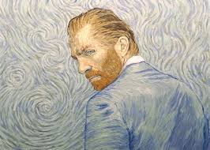

Vincent Willem van Gogh (30 March 1853 – 29 July 1890) was a Dutch Post-Impressionist painter who is among the most famous and influential figures in the history of Western art. In just over a decade he created about 2,100 artworks, including around 860 oil paintings, most of them in the last two years of his life. They include landscapes, still lifes, portraits and self-portraits, and are characterised by bold colours and dramatic, impulsive and expressive brushwork that contributed to the foundations of modern art. His suicide at 37 followed years of mental illness and poverty.
If You want to know more about Vincent, please, subscribe to our weekly newsletter ✌ *
